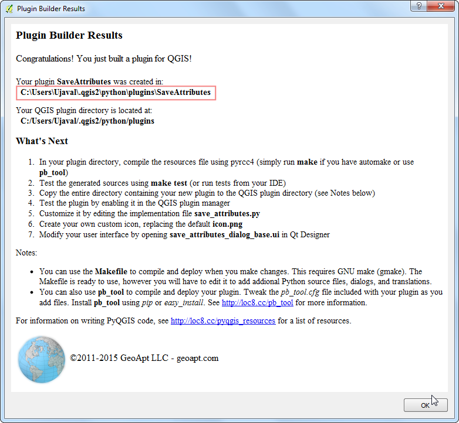

Calcolare il numero dei vertici in un layer
[ Download PDF A4 Letter ]
QGIS non ha funzioni residenti che calcolano il numero dei vertici per ciascuna geometria all’interno di un layer. Tuttavia, un comodo plugin chiamato Vertices Counter colma questa lacuna e aggiunge qualche utile elemento.
Procedimento
- Find and install the Vertices Counter plugin. See Usare i Plugins
for details on installing plugins in QGIS.

Caricate un layer poligonale o, indifferentemente, un layer lineare. Andate su .

Nella finestra di dialogo del plugin, per default, il layer attivo sarà selezionato nella sezione Layer Selection. Ma, all’occorrenza, voi potreste selezionare qualsiasi altro layer già caricato o, anche, caricare i layer direttamente dai vostri dispositivi di memoria di massa. La finestra del plugin presenta un’opzione chiamata Create new column che permette di aggiungere una colonna con il numero dei vertici presentato come un attributo per ciscuna singola geometria. Questo può essere comodo in una pluralità di circostanze, perciò è bene che selezioniamo questa opzione. Adesso facciamo click sul pulsante Count Vertices e la sezione Results sarà riempita automaticamente con il numero indicante i vertici presenti in ciascuna geometria. A lato verrà visualizzato il numero dei vertici alla voce Total Vertices .

Torniamo nella finestra principale di QGIS per verificare se è stata aggiunta una nuova colonna nel nostra layer. Click con il tasto destro sul layer e selezioniamo Opri Tabella Attributi.

Come potrete notare, una colonna denominata Vertices è stata aggiunta alla fine e indica il numero dei vertici per ciascuna geometria. Questa colonna può tornare utile se volete effettuare un’interrogazione come per esempio Seleziona tutti gli elementi che hanno un numero di vertici > x.